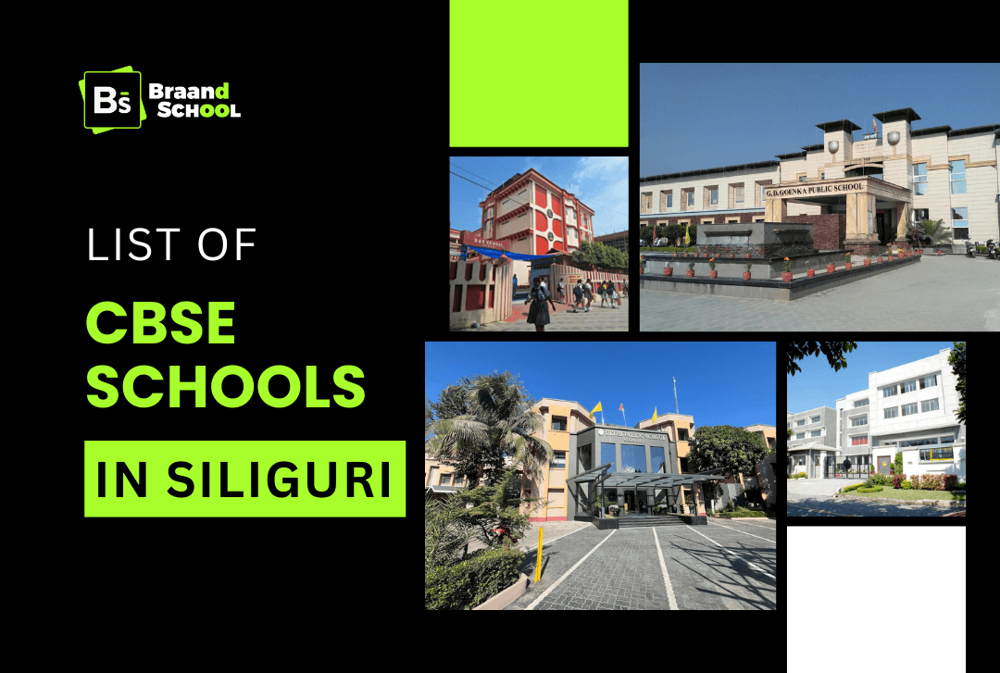
Looking for good schools in Siliguri? Many parents prefer CBSE schools because the syllabus is simple and accepted all over India. CBSE schools in Siliguri are known for regular studies, activities, and discipline. These schools do not only focus on studies. They also try to help students become confident and responsible.
Below are some CBSE schools in Siliguri that parents usually talk about when searching for good schools:-
G.D. Goenka Public School
G.D. Goenka Public School in Siliguri started in 2007. It is managed by the G.D. Goenka Group. The school gives importance to good studies and also helps students grow their personality. Students are told to join sports, competitions, and cultural programs. The school is a friendly place, where students slowly become more confident.
Classes: Nursery to Class 12
Category: Co-Ed
Website: https://www.gdgoenkaschool.in/
Contact Details
Mobile No: 9800016008
Email: info@gdgoenkaschool.in
Address: New Chumta, Dagapur, Dhukuria, Siliguri
Delhi Public School
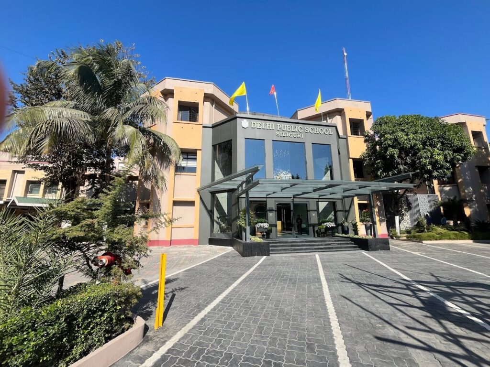
Delhi Public School, Siliguri was established in 2003, stands as one of the most reputed CBSE schools in the region, known for its excellence, discipline and all-round development approach. It is a co-educational day-cum-boarding school following a progressive and student-centric curriculum. The school is managed by DPS society, which ensures high educational standards and continuous innovation in teaching methods.
Classes: Pre-Nursery to Class 12
Category: Co-Ed
Website: https://www.dpssiliguri.com/
Contact Details:
Mobile No: 3532517519
Email: info@dpssiliguri.com
DPS, Dagapur Campus:
Address: Darjeeling Road, P.O. Pradhan Nagar, Dagapur, Siliguri
DPS, Fulbari Campus:
Address: Chhobavita, Canal Road, Fulbari, Siliguri
Modi Public School
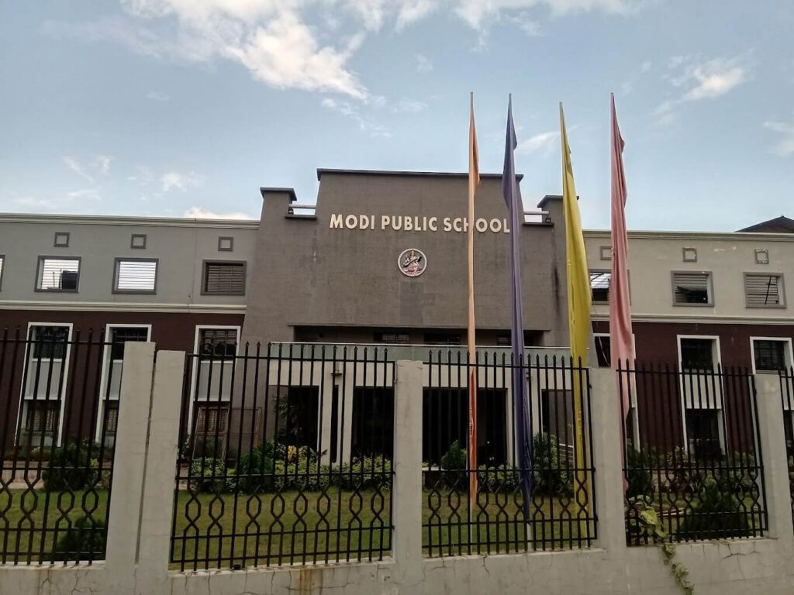
Modi Public School in Siliguri is a leading CBSE-based day cum boarding school, known for its quality education and modern facility. Established in 2014, the school is known for its disciplined environment and student-centric approach, focusing on building a strong academic foundation along with life skills. It is a co-educational English medium school, offering a balanced curriculum of activities.
Classes: Nursery to Cass 12
Category: Co-Ed
Website: https://mpssiliguri.com/
Contact Details:
Mobile No: 95647 77747
Email: mpss_principal@yahoo.com
Address: Phathargata Road, Matigara, Siliguri
Birla Diva Jyoti School
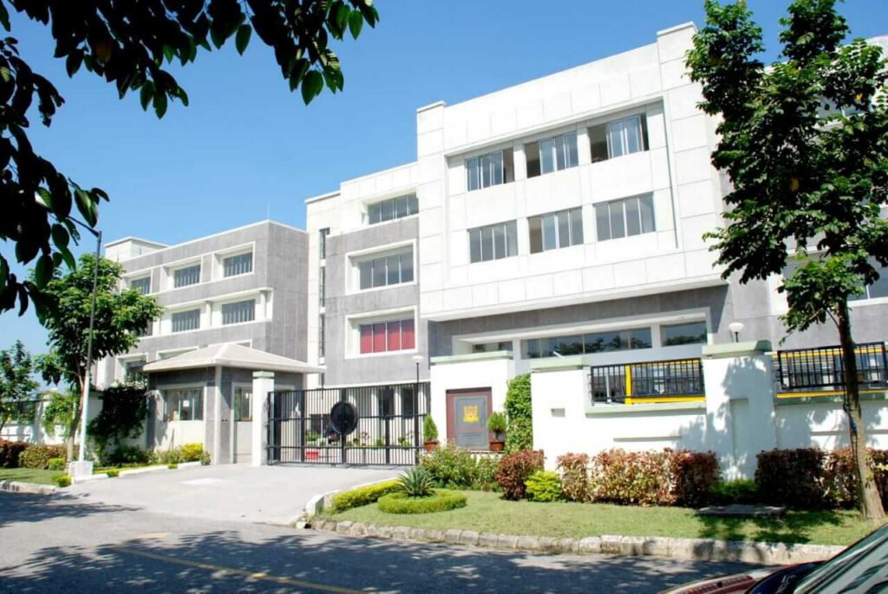
Birla Divya Jyoti School, founded in 2008, is a co-educational English medium school, following CBSE curriculum. Established under the guidance of the Birla legacy, the school aims to nurture disciplined, confident and socially responsible students while maintaining academic standards. The school offers education from primary to senior secondary level, supported by a team of experienced and qualified teachers. The school promotes sports, cultural programs, debates, competitions and co-curricular activities, making it trusted choice for quality school in the region.
Classes: Nursery to Class 12
Category: Co-Ed
Website: https://birladivyajyoti.com/
Contact Details:
Mobile No: 7407004720
Email: info@birladivyajyoti.com
Address: Zone-F, Uttorayon Township Matigara, Siliguri
Siliguri Model High School
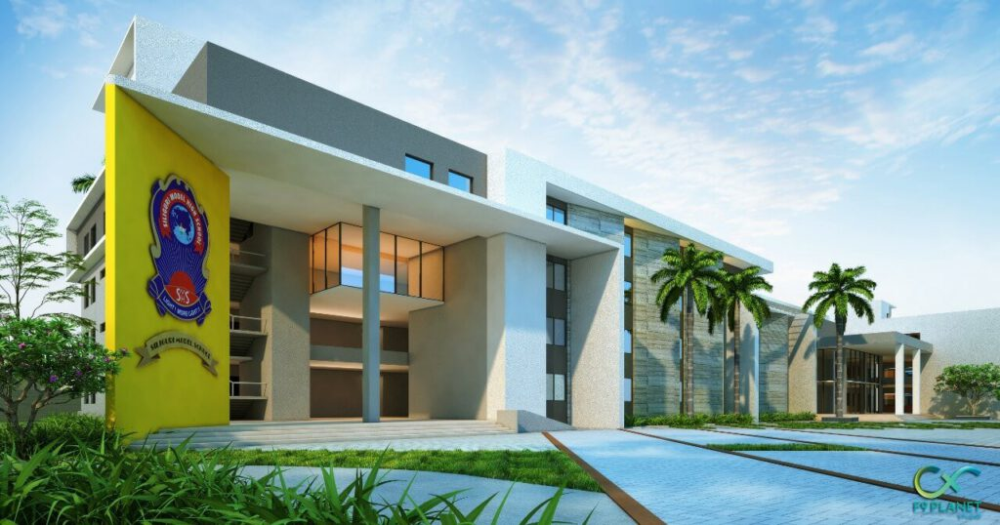
Siliguri Model High School started in 1989. It is run by an educational trust. The teachers are very nice and always help students. They stay close with students and guide them in class and also outside class. The school has boys and girls and teaches in English. It is connected with CBSE board. Students do sports, cultural programs and other school activities. This helps them to become confident and also learn to be leader.
Classes: Nursery to Class 12
Category: Co-Ed
Website: https://siligurimodelhighschool.com/
Contact Details:
Mobile No: 7810985193
Email: info@siligurimodelhighschool.com
Address: Baropathuram Mouza, PO: Ranidanga, Siliguri
Woodridge International School
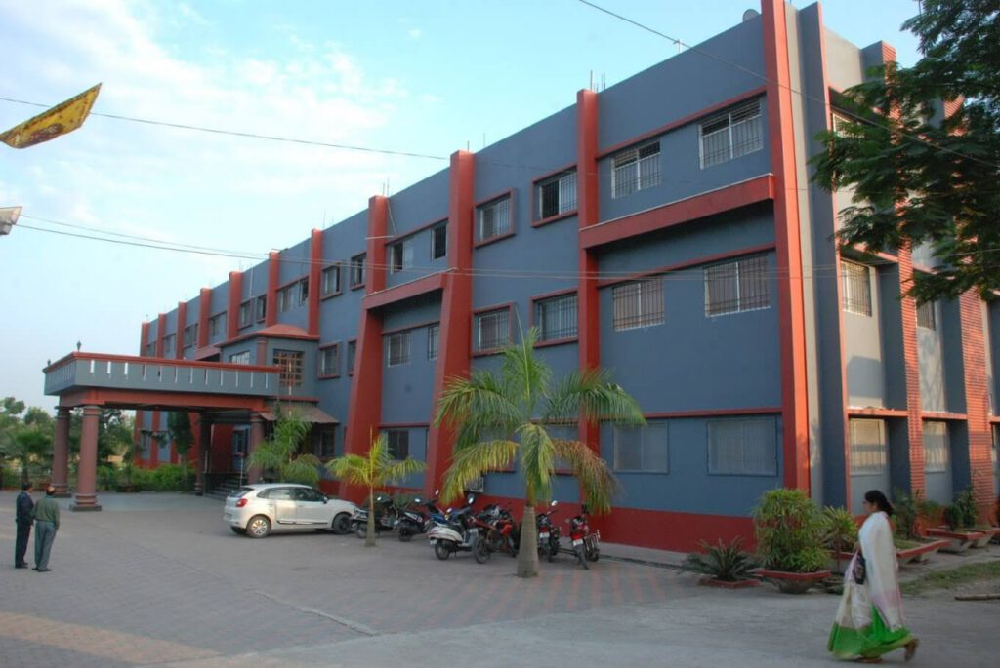
Woodridge International School, Siliguri was founded in 2010 and is managed by Shri Vinod Kumar Rai. The school started from just 5 students and 6 dedicated teachers, now the school has grown to class 12. The school is co-educational English medium CBSE school, designed to provide a balanced education that gives equal importance to academics, skills and character development.
Classes: Nursery to Class 12
Category: Co-Ed
Website: https://woodridgeinternationalschool.com/
Contact Details:
Mobile No: 9434808124
Email: woodridgeinternationalschool@gmail.com
Address: Patharghata, Rajpairi, PO-New Chumta, Siliguri – 734009
BSF Senior Secondary Residential School
BSF Senior Secondary Residential School started in 1994. It is run by the Border Security Force. The school is a residential school and follows the CBSE board. Discipline is given a lot of importance here. Along with studies, students also do drills, sports and cultural programs. The school follows a fixed daily routine which helps students stay organized.
Classes: Grade 6 to class 12
Category: Co-Ed
Website: https://bsfschoolkadamtala.org/
Contact Details
Mobile No: 353 258 0820
Email: info@bsfschoolkadamtala.org
Address: BSF campus Kadamtala, Siliguri
Narayana School
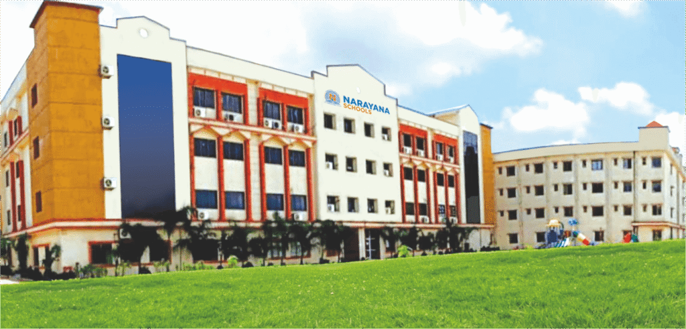
Narayan School, Siliguri was established in 2016 as a part of the renowned Narayan Group of Educational Institutions, it is a co-educational CBSE school that focuses on shaping disciplined, confident and responsible learners. The school adopts technology-enabled and activity based learning methods, encouraging healthy interaction between teachers and students to create a supportive and engaging academic atmosphere.
Classes: Pre-Nursery to Class 12
Category: Co-Ed
Website: https://narayanaschools.in/
Contact Details:
Mobile No: 8695640602
Email: wbsiliguri.etechno@narayanagroup.com
Address: Narayana School, Near Sona Petrol Pump, Salugara, Siliguri
Sri Sri Academy
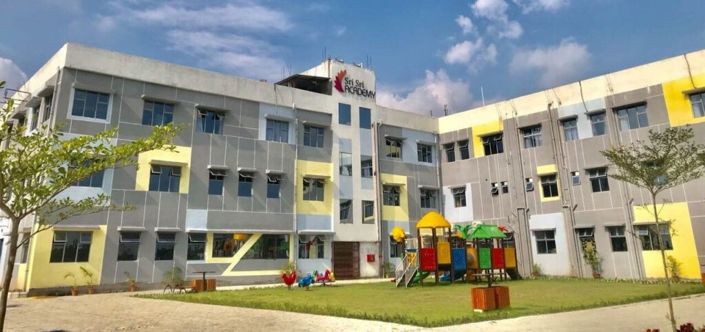
Established in 2017, Sri Sri Academy is a co-educational CBSE school commitment to nurturing students with balanced focus on academics and values. The school believes in creating an environment where each student feels encouraged to explore, learn and grow in confidence. Over the years, the school has developed its teaching practices by adopting modern educational tools and student-friendly methods.
Classes: Nursery to Class 12
Category: Co-Ed
Website: https://srisriacademy.in/
Contact Details:
Mobile No: 9733566685
Email: info@srisriacademy.in
Address: Dhukuria, P.O. New Chumta, Dagapur, Siliguri
Mayoor School
Established in 2024, Mayoor School Siliguri stands as one of the best CBSE schools in Siliguri. Rooted in the rich legacy of Mayo College General Council, Ajmer, the school aims to nurture curious, confident and compassionate learners by combining traditional values with contemporary education methods. It is a co-educational, English-medium day-cum-boarding school, offering classes from Nursery to Class 8. The experienced team of educators uses interactive learning tools and supportive approaches to help children thrive.
Classes: Nursery to Class12
Category: Co-Ed
Website: https://www.mayoorschoolsiliguri.com/
Contact Details:
Mobile No: 8116303092
Email: office@mayoorschoolsiliguri.com
Address: Dhukuria, Patharghata, P.S. Matigara, Siliguri
North Point Residential School
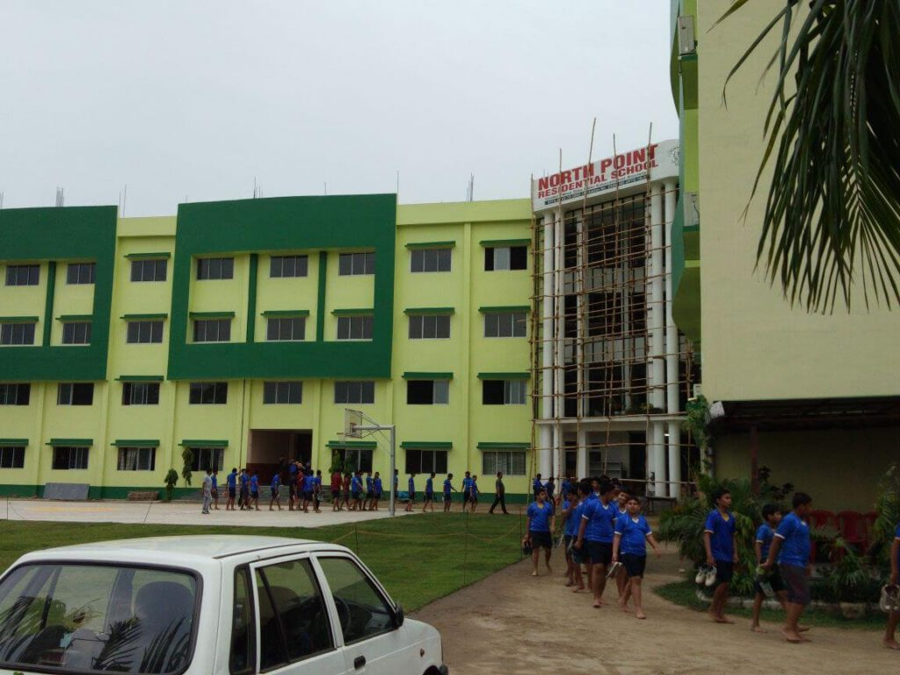
North Point Residential School started in 1996. It is a boarding school but day students also study here. The school has arts, commerce and science streams. Students join sports, music, debates and exhibitions. The school gives importance to studies and activities both.
Classes: Nursery to Class 12
Category: Co-Ed
Website: https://nprs.co.in/
Contact Details:
Mobile No: 9735527777
Email: info@nprs.co.in
Address: Opposite S.S.B.Camp, Ranidanga, Siliguri
DAV School
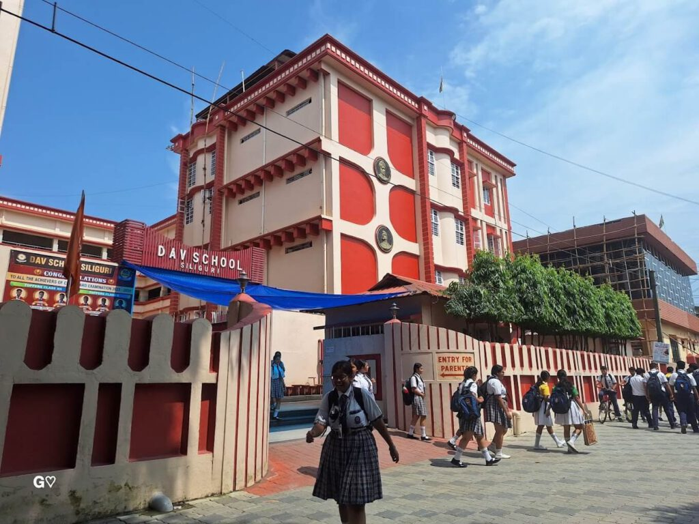
DAV School Siliguri started in 1996. It follows the CBSE board and is run by the DAV College Managing Committee. The school teaches students about studies and also good moral values. Students take part in sports, cultural programs and school activities. Teachers give importance to discipline and regular study habits.
Classes: Nursery to class 12
Category: Co-Ed
Website: http://www.davsiliguri.com/
Contact Details:
Mobile No: 8101913102
Email: info@davsiliguri.com
Address: Near Mahananda Barrage Project, Fulbari, Siliguri
Darjeeling Public School
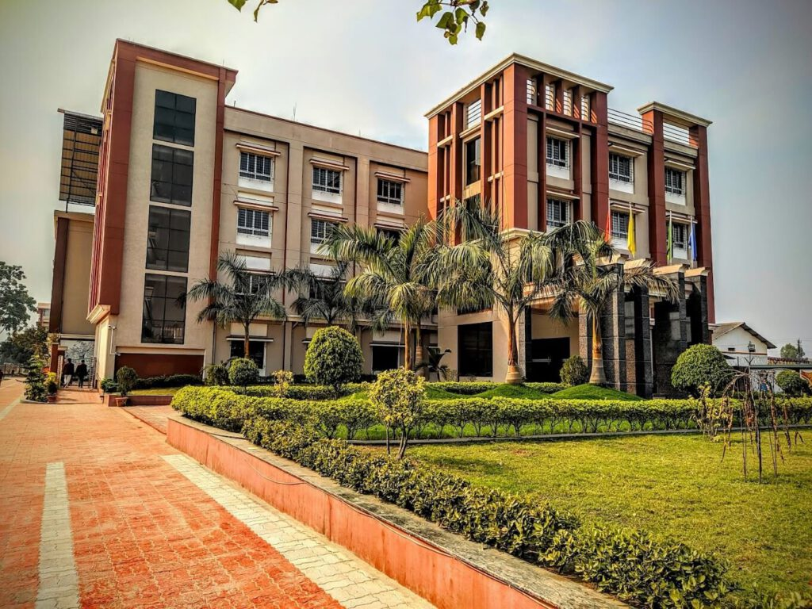
Darjeeling Public School in Siliguri started in 2004. It is run by the Siliguri Progressive Educational Society. The school follows CBSE board and has boys and girls. It is a day school and also has boarding facility till senior secondary. Earlier it was small, but slowly it has grown into a well organised campus. The school has smart classrooms, science and computer labs, library and separate places for sports and activities.
Classes: Nursery to Class 12
Category: Co-Ed
Website: https://www.darjeelingpublicschool.in/
Contact Details:
Mobile No: 90647 95034
Email: schooldarjeelingpublic@gmail.com
Address: Near State Armed Police Brigade Fulbari, Dabgram, Siliguri
Royal Academy
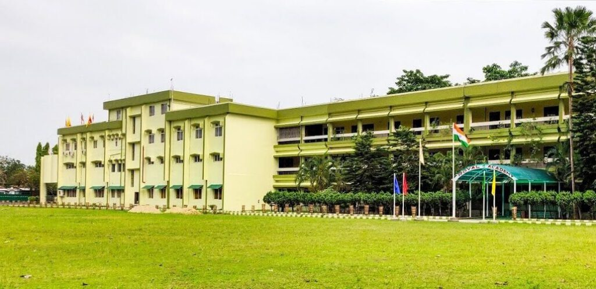
Royal Academy in Matigara, Siliguri started in 1993 and it follows the CBSE board for education. The school is both a boarding and day school for the students and has a big campus with smart classrooms, science and computer labs, library and playgrounds. Teachers try to teach not only lessons from books but also help students grow in activities and sports. Students join many programs and events which helps them to learn, become confident and build good habits. The school also has hostel and bus facilities so students from far places can study here too.
Classes: LKG to Class 12
Category: Co-Ed
Website: https://royalacademymatigara.com
Contact Details:
Mobile No: 9434051010
Email: academyroyal97@yahoo.in
Address: Patharghata Road Motajote, behind Lexicon Auto, Matigara, Siliguri
Techno India Group Public School
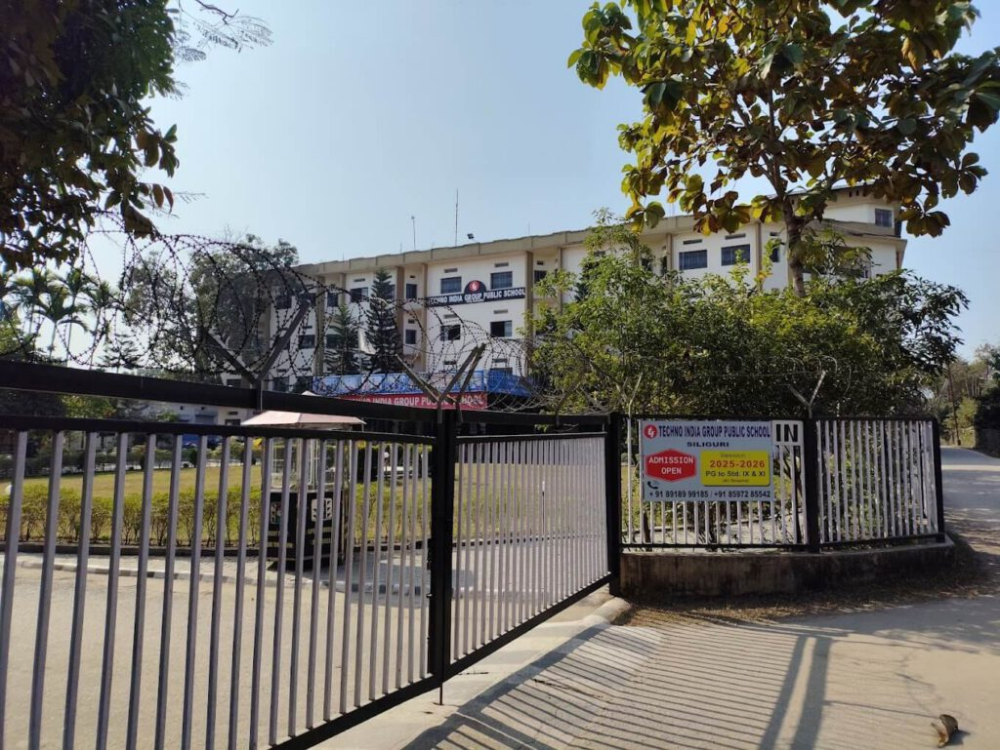
Techno India Group Public School in Siliguri is a CBSE school which teaches boys and girls from playgroup to class 12. The school is part of the big Techno India Group that tries to make students good in studies and many other activities too. Teachers here help students to learn not only from books but also in sports, arts and other fun things. The school has smart classrooms, labs, library and places for games and activities, so students can enjoy learning. Students are also encouraged to think, be creative and try new things in a friendly environment.
Classes: Play Group to Class 12
Category: Co-Ed
Website: https://siliguri.tigps.in
Contact Details:
Mobile No: 8597285542
Email: admin.siliguri@tigps.in
Address: S.I, T. Campus, Hill Cart Rd, P.O, Sukna, Siliguri
Choosing the right school for children is not so easy. There are many good CBSE schools in Siliguri which teach studies and also help students grow in other ways. Parents should try to find a school where their child can learn, play and become more confident. Along with studies, sports, activities and discipline are also very important for children. Parents can also see ICSE schools in Siliguri to check if they are good for their child.
Hope this blog helps parents to pick a better school for their kids.